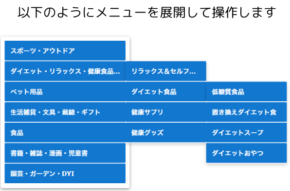

実験へのご協力に関する同意
本実験では操作ログ等を記録します。データは匿名化され、研究以外に利用しません。
同意いただけたら「同意する」をクリックし，F11キーで全画面表示してください。
結果一覧
| タスク番号 | 正解項目 | 所要時間 (s) | エラー回数 | タイムアウト | 使用したイージング関数 |
|---|

メニューを開くたびにマウスでクリックして選択してください。
下のボタンで開始してください。
チュートリアル完了
ご理解ありがとうございます。
チュートリアルは以上です。タスク開始前にメニューの内容を確認しておいてください。
タスクについてのアンケート
Q1.メニューの動きは自然に感じましたか？
1(全くそう思わない) 〜 5(とてもそう思う)
Q2.アニメーションの違いが操作のしやすさに影響しましたか？
1(全くそう思わない) 〜 5(とてもそう思う)
Q3.このメニューの使い心地はどうでしたか？
1(全く感じなかった)〜 5(とても感じた)
コメントがあればご記入ください：